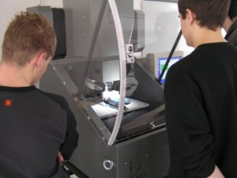

Výuka na škole
CATIA na SPŠ
Ve školním roce 2001/2002 byla na naší škole zahájena výuka v CAD systému CATIA. Výuka probíhá ve třetím a čtvrtém ročníku oboru IT systémy ve strojírenství, u ostatních oborů ve třetím ročníku. Během výuky se studenti naučí základům práce ve 3D, v oboru IT systémy ve strojírenství je výuka rozšířena o plošné modelování, parametrizaci a počítačovou podporou obrábění – CAM. V současnosti má škola k dispozici 40 licencí CATIA, výuka probíhá paralelně ve více učebnách.
CNC technika na naší škole
Na SPŠ v Mladé Boleslavi mají studenti pro výuku strojírenské technologie k dispozici velmi kvalitně vybavenou učebnu s CNC stroji, stejně tak i SW pro programování těchto strojů. Studium oboru strojírenství umožňuje získat znalosti o počítačové podpoře konstruování a výroby (CAD, CAM). Studenti získávají kromě znalostí z oblasti všeobecného strojírenství i znalosti z oblasti výpočetní techniky. Seznamují se s uživatelskými programy sloužícími ke konstrukčnímu i technologickému projektování. Grafické práce probíhají v prostředí CATIA a SprutCAM.
Hlavním záměrem je přiblížení výuky praxi, tedy realizovat výuku na strojích a řídicích systémech, které se používají ve strojírenských firmách regionu Mladá Boleslav. Po zvládnutí základů programování dvouosého obrábění začnou studenti vytvářet složitější programy v takzvaných CAD-CAM systémech. Zde nejprve provedou počítačový grafický návrh tvaru součásti v systému CATIA nebo SprutCAM, navrhnou k tomuto tvaru technologický postup, přiřadí nástroje, řezné podmínky, provedou názornou simulaci a odladění programu.Vygenerovaný a odsimulovaný program se přenese na stroj a zrealizuje se obrobení.
Ve školním roce 06/07 byla zrealizována na této technice první témata individuálních praktických maturitních prací. Na škole jsou v současné době k dispozici čtyři CNC obráběcí stroje. Jedná se o dva soustruhy s typovým označením SL 160 CNC ( malý přesný CNC soustruh vhodný k výrobě tvarově složitých součástí menší délky )a S 280 CNC s revolverovou hlavou, dvě frézky, první HWT frézka je vhodná především pro výrobu grafitových elektrod, frézování plastů, dřeva, hliníku apod.. Druhá frézka je dodaná firmou Teximp s ŘS HAAS.
IQRF Smart School
IQRF Smart School je program IQRF Alliance zaměřený na podporu výuky, vzdělávání a praktických dovedností studentů středních a vysokých škol v oblasti bezdrátové komunikace, technologie IQRF a internetu věcí. Pomocí Internetu věcí – IoT (někdy označovaný jako Internet všeho – IoE) se propojují a komunikují lidé, lidé a věci, ale i samotné věci.
IQRF je technologie, kterou vyvinula firma MICRORISC s.r.o., a za výsledky své mnohaleté výzkumné práce v oblasti bezdrátových sítí pro podporu Internetu věcí byla v roce 2014 oceněna cenou Česká hlava. Firma vlastní mnoho patentů chránících výsledky výzkumu a získala nejvyšší vědecké ocenění v České republice. IQRF je platforma, která se zabývá bezdrátovým přenosem dat.
25. září 2015 se naše škola stala členem IQRF Alliance.
Cizí jazyky
Na naší škole probíhá výuka dvou cizích jazyků – anglického a německého.
Studenti oboru Strojírenská technická administrativa mají učebními osnovami předepsanou povinnou výuku obou jazyků, studenti ostatních oborů výuku pouze jednoho jazyka.
Studenti ostatních studijních oborů, kteří studují povinně pouze jeden jazyk, jsou na začátku prvního ročníku zařazeni do skupin podle cizího jazyka, který se učili na základní škole. Druhý jazyk mohou studovat formou nepovinného předmětu.
Jsme na Facebooku
SPŠ Mladá BoleslavStáž v zahraničí
V rámci vzdělávacího programu Erasmus+ absolvují vybraní studenti zahraniční stáž v Anglii nebo v Irsku. Stáži předchází přípravné hodiny angličtiny. Třítýdenní pobyt je plně hrazen z prostředků projektu.
Více o ErasmuZřizovatel školy
Střední průmyslová škola, Mladá Boleslav, Havlíčkova 456 je příspěvková organizace zřizovaná Středočeským krajem.